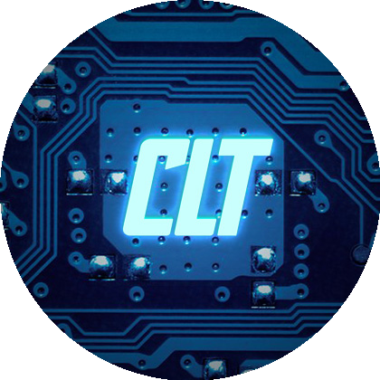

Bienvenue sur mon portail GitHub
Scripts, tutoriels et projets en cybersécurité.

Passionné par la cybersécurité, Linux, l'intelligence artificielle, les nouvelles technologies et la musique assistée par ordinateur.
Scripts, tutoriels et projets en cybersécurité.